薛定谔方程（Schrödinger's Equation）¶
Overview
本讲涵盖薛定谔方程的推导、定态解、波包、势垒反射与隧穿以及扫描隧道显微镜。
动机¶
经典波 \(\psi(x,y,z,t)\) 满足波动方程：
其中 \(v\) 是波速。
量子理论
在量子理论中，微观粒子由概率幅 \(\psi(x,y,z,t)\) 描述，找到粒子的概率正比于： \(\(P(x,y,z,t) = |\psi(x,y,z,t)|^2\)\)
核心问题
支配量子粒子运动的波动方程是什么？
薛定谔方程¶
从经典粒子出发¶
寻找描述自由粒子（质量 \(m\)）量子行为的方程，粒子由波 \(\psi(x,t) = e^{i(kx-\omega t)}\) 表示。
经典能量-动量关系
根据德布罗意假说：
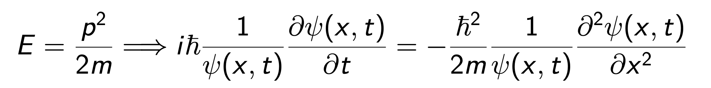
有势能的情况¶
势能存在时
例如简谐势 \(U(x) = ax^2/2\)，经典关系修改为： \(\(E = \frac{p^2}{2m} + U(x)\)\)
其中 \(E\) 是运动常数，但 \(p\) 不是。
换句话说，平面波不再是解。
说明
- \(p\) 是粒子动量，\(m\) 是粒子质量
- \(U(x)\) 是与位置 \(x\) 相关的势能
- \(E\) 是系统总能量（守恒）
- 有势能时，动能与势能相互转化，动量不守恒
- 简单的平面波不再是解，需要更复杂的描述
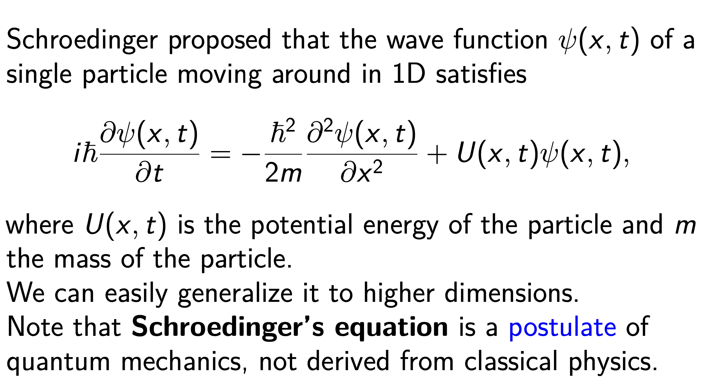
关键性质
薛定谔方程是齐次且线性的！
线性与齐次的定义
线性偏微分方程（PDE）：
如果未知函数及其偏导数只以一次幂出现，则称为线性。可表示为： \(\(L(u) = a_n(x,y)u_{xx} + a_{n-1}(x,y)u_x + \cdots + a_1(x,y)u_y + a_0(x,y)u + F(x,y) = 0\)\)
关键是所有系数 \(a_n(x,y), a_{n-1}(x,y), \ldots, a_0(x,y)\) 以及 \(F(x,y)\) 都不依赖于未知函数 \(u\) 或其导数的值。
齐次偏微分方程：
方程中所有项都是未知函数及其偏导数的齐次多项式。
注意：齐次方程没有"常数项"。
定态薛定谔方程¶
假设
在大多数讨论的情况下，势能 \(U = U(x)\) 与时间无关。
我们可以通过设 \(\psi(x,t) = \phi(x)e^{-iEt/\hbar}\) 来求解定态。
代入后得到 \(\phi(x)\) 的方程：
通过求解此方程，我们可以在定态外势 \(U(x)\) 下得到定态解 \(\phi(x)\)。
自由空间解¶
在自由空间中，\(U(x) = 0\)。
通解
其中 \(A\) 和 \(B\) 是常数，\(k = \sqrt{2mE}/\hbar\)。
二阶常系数齐次 ODE
一般形式： \(\(a\frac{d^2y}{dx^2} + b\frac{dy}{dx} + cy = 0\)\)
假设解的形式为 \(y = e^{rx}\)，代入得特征方程： \(\(ar^2 + br + c = 0\)\)
三种情况：
- 两个不同实根 \(r_1\) 和 \(r_2\)：\(y = C_1 e^{r_1 x} + C_2 e^{r_2 x}\)
- 一个重复实根 \(r\)：\(y = (C_1 + C_2 x)e^{rx}\)
- 两个共轭复根 \(r = \alpha \pm \beta i\)：\(y = e^{\alpha x}(C_1\cos\beta x + C_2\sin\beta x)\)
完整的含时波函数¶
其中 \(\omega = E/\hbar\)
两项解释
- 第一项：向右传播的波
- 第二项：向左传播的波
考虑向右传播的波 \(\psi(x,t) = Ae^{i(kx-\omega t)}\)，概率密度是均匀的：
物理意义
如果我们测量粒子的位置，它可能出现在任何 \(x\) 值处。
波包¶
自由量子粒子的速度是多少？
其中 \(\omega = E/\hbar\) 且 \(k = \sqrt{2mE}/\hbar\)
相速度：
另一方面，经典自由粒子的速度：
问题 #1
量子力学波函数以粒子一半的速度传播！
问题 #2
如何归一化自由粒子的波函数（如 \(Ae^{ikx}\)）？
这个波函数不可归一化！
重要结论
定态（可分离）解对于自由粒子不代表物理上可实现的状态。
不存在具有确定能量的自由粒子。
自由粒子薛定谔方程的实际解¶
在量子理论中，局域化粒子由这些定态自由粒子（或平面波）态的线性叠加来建模。
一般地，我们可以构造线性组合（对连续 \(k\) 积分）：
波包
对于适当的 \(\phi(k)\)（通常是高斯型），这个波函数可以归一化。
我们称之为波包，它包含一定范围的 \(k\)，因此包含一定范围的能量和速度。
在一般量子问题中，给定 \(\Psi(x,0)\)，需要找到 \(\Psi(x,t)\)。
不确定性原理
通过以正确方式叠加更多不同波长或动量的平面波态，粒子可以更好地局域化（\(\Delta x\) 可以减小），但 \(\Delta p\) 增加。
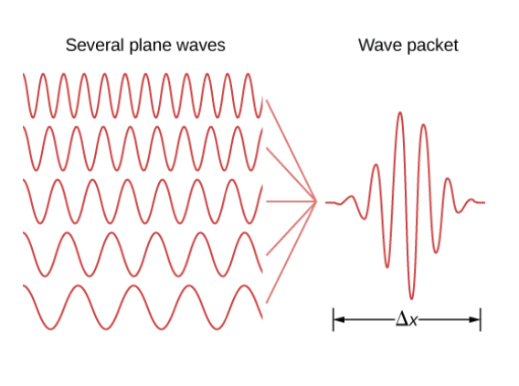
根据海森堡，这些不确定度满足：\(\Delta x \cdot \Delta p \geq \hbar/2\)
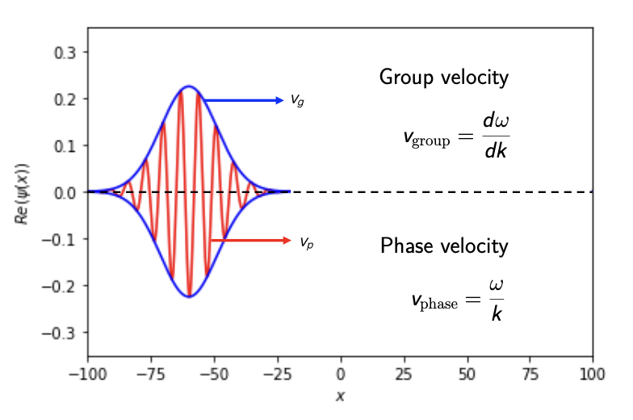
关键结论
波包的群速度（而非定态的相速度）与经典粒子速度匹配。
练习题¶
从势阶反射¶
考虑一束非相对论电子，每个电子总能量为 \(E\)，沿 \(x\) 轴通过窄管传播。它们在 \(x = 0\) 处遇到高度为 \(V_b < 0\) 的负电势阶。（注意电子电荷 \(q\) 为负）
情况：\(E > qV_b\)¶
经典预测
电子应该全部通过边界。总能量守恒，所以当势能增加时，动能（因而速度）减小。
量子力学会发生什么？
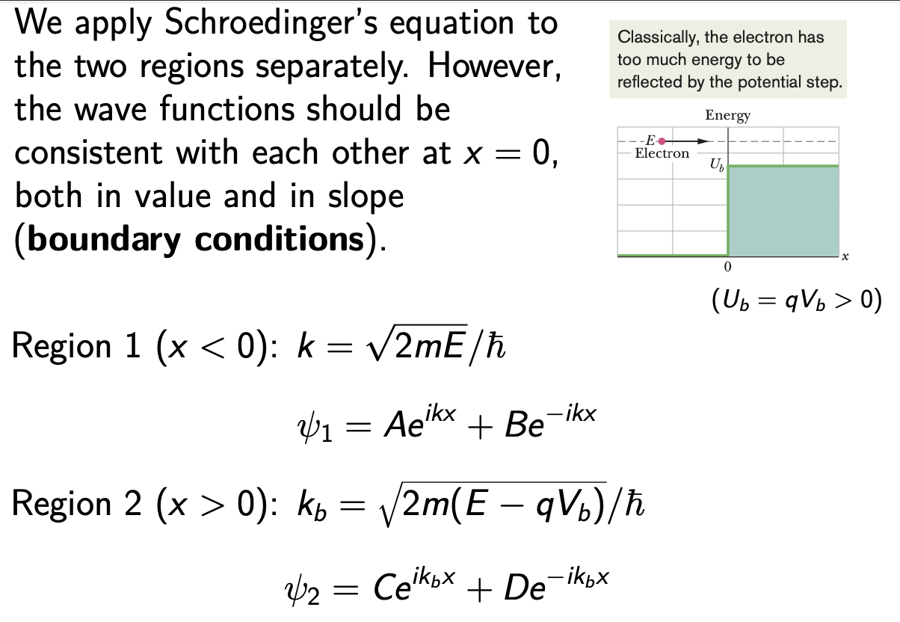
- 设 \(D = 0\)，因为右边没有电子源，区域 2 中没有向左运动的电子
- 在 \(x = 0\) 处应用边界条件：
- \(A + B = C\)（值匹配）
- \(Ak - Bk = Ck_b\)（斜率匹配，一阶导数）
我们可以解出 \(B/A\) 和 \(C/A\)，但不能解出 \(A\)、\(B\) 和 \(C\)。
说明
绝对值对我们的目的不重要（它与束流强度有关）。
反射系数
量子效应
量子力学中，电子会从边界反射，但只是以一定概率。
透射系数的定义
可以考虑另一个量 \(\frac{|C|^2}{|A|^2} = \frac{4k^2}{|k+k_b|^2} = \frac{k}{\text{Re}(k_b)}T = \frac{k}{k_b}T\)（对于实 \(k_b\)，即 \(E > qV_b\)）
回忆电流密度 \(J = nqv\)。不出所料：
类似地：\(R = \frac{J_{reflected}}{J_{incident}}\)
因此，\(T = 1 - R\) 就是电流守恒：\(J_{transmitted} = J_{incident} - J_{reflected}\)
情况：\(E < qV_b\)¶
结果
完全反射！
隧穿势垒¶
现在考虑势垒，即厚度为 \(L\) 的区域，其中电势为 \(V_b (< 0)\)，势垒高度为 \(U_b = qV_b\)。
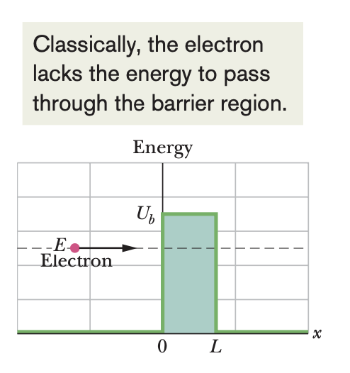
情况：\(E < qV_b\)
- 将空间分成三个区域，在每个区域求解薛定谔方程（\(3 \times 2 - 1 = 5\) 个未知数）
- 在两个边界应用边界条件（\(2 \times 2 = 4\) 个条件）
- 计算隧穿系数
一般结果¶
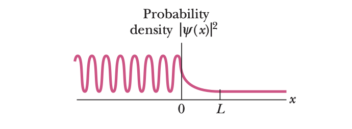
波函数行为
-
势垒左侧（\(x < 0\)）：振荡曲线是入射物质波和反射物质波（振幅较小）的组合。由于两波反向传播而干涉，形成驻波图案。
-
势垒内部（\(0 < x < L\)）：概率密度随 \(x\) 指数衰减。但如果 \(L\) 足够小，在 \(x = L\) 处概率密度不完全为零。
-
势垒右侧（\(x > L\)）：描述透射波（穿过势垒），振幅低但恒定。
透射系数
其中 \(\kappa = \frac{\sqrt{2m(qV_b - E)}}{\hbar}\)
可以尝试推导（实际上是虚数 \(k'\)）
\(T\) 对 \(L\)、\(m\) 和 \(U_b - E\) 敏感。
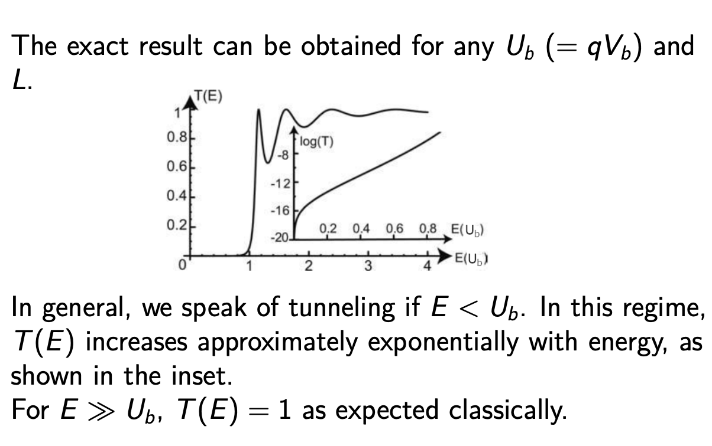
扫描隧道显微镜（STM）¶
光学显微镜的局限
光学显微镜能看到的细节大小受光波长限制（紫外光约 300 nm）。
我们使用电子物质波（通过势垒隧穿）来创建原子尺度的图像。
压电效应
压电效应是指某些晶体在受到机械应力时产生电荷分离，产生电压；或者当施加电场时，晶体发生机械变形。
两种类型： 1. 正压电效应：晶体受压产生电压 2. 逆压电效应：电场使晶体变形
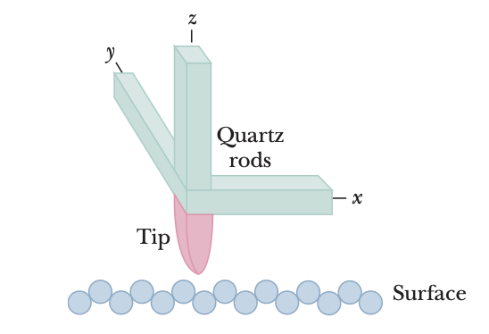
STM工作原理
将精细金属探针安装在石英棒上，放置在待检表面附近。表面与探针之间的空间形成势垒。
- 石英具有压电性
- 探针位置可通过施加电场来控制
- \(x\) 和 \(y\) 方向的电场控制水平位置
- \(z\) 方向的电场控制垂直距离
- 透射系数 \(T \sim e^{-2\kappa L}\) 对势垒宽度敏感
- \(\rightarrow\) 隧穿电流对表面与探针距离敏感
- 扫描时调整探针垂直位置以保持隧穿电流恒定，实现原子尺度成像
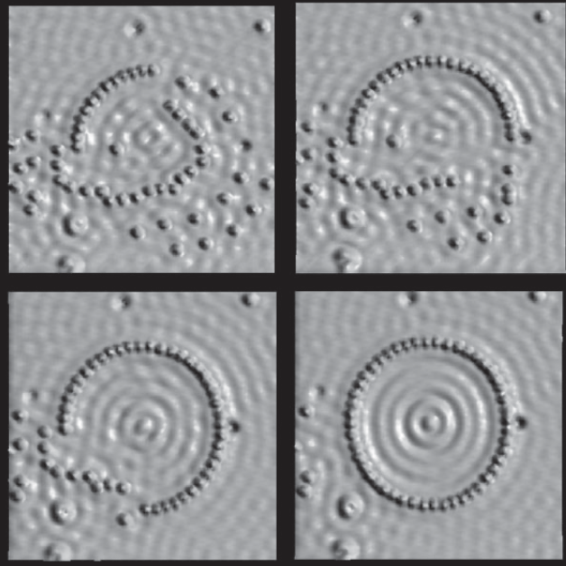
原子操控
STM 不仅能提供静态表面的图像，还可以用于操控表面上的原子和分子。
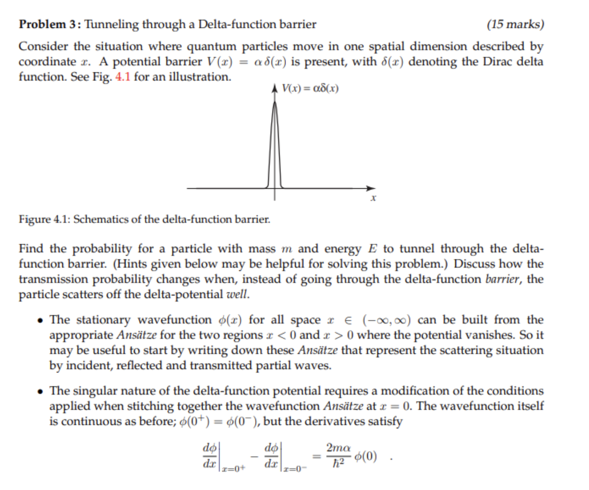
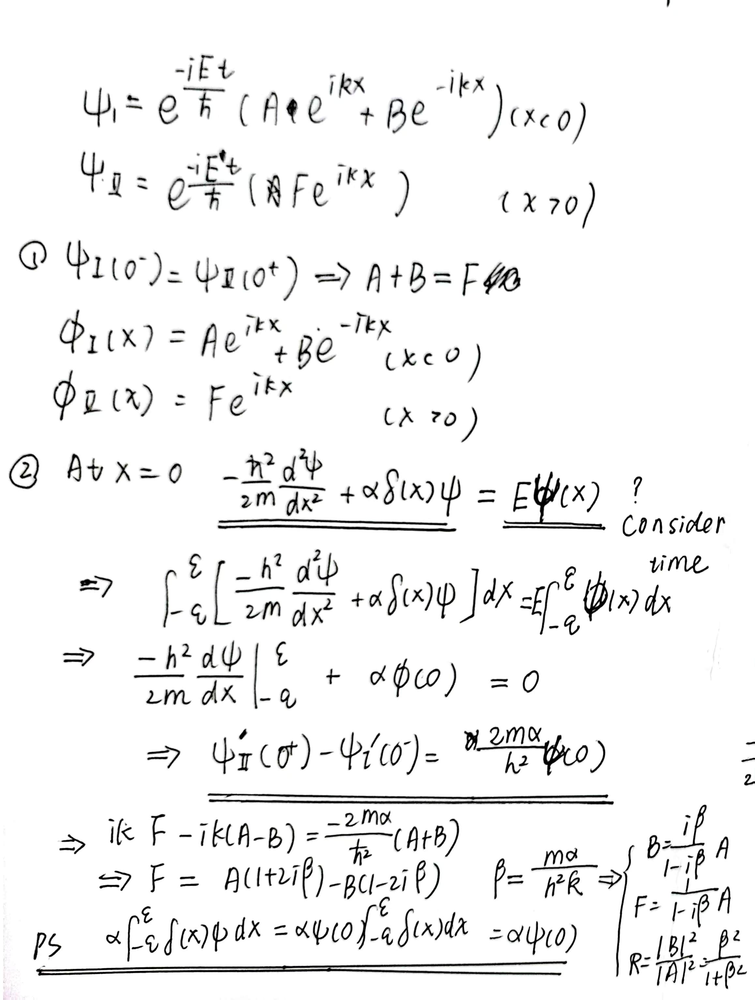
S 矩阵¶
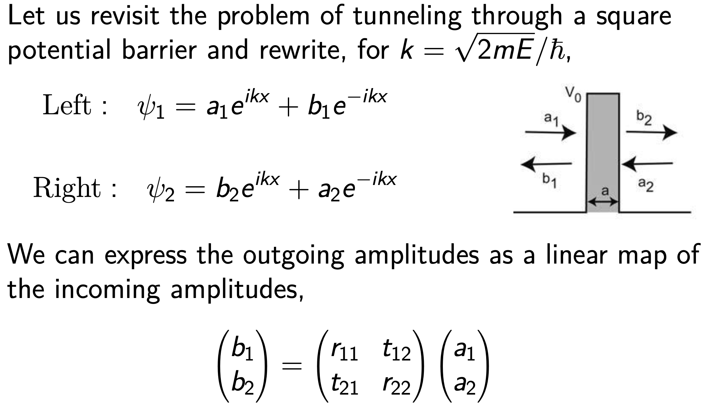
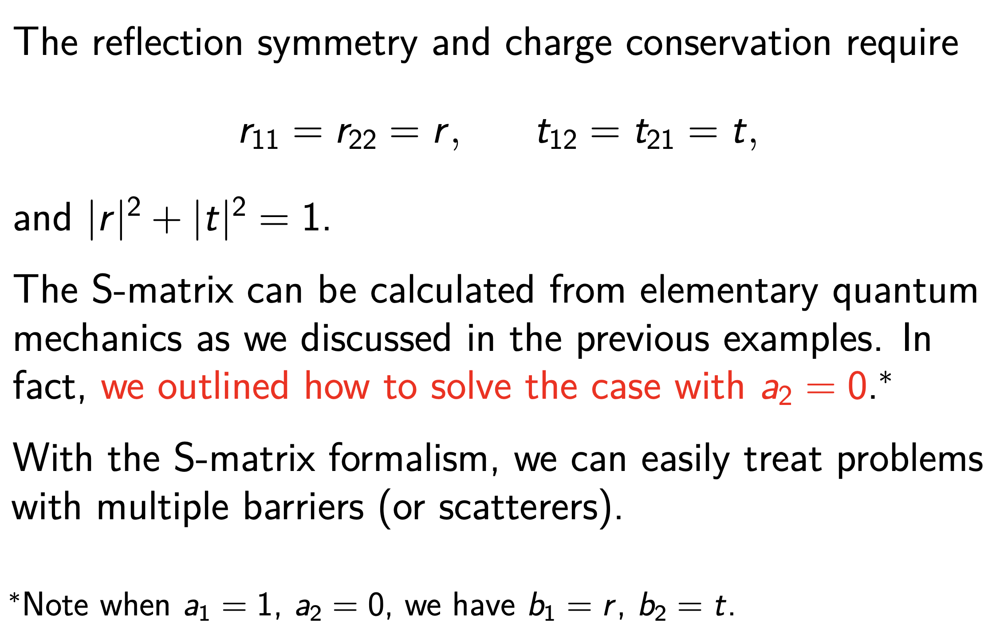
概率守恒
表达式 \(|r|^2 + |t|^2 = 1\) 是量子力学中概率守恒的结果。
-
概率守恒：找到粒子的总概率必须守恒。当粒子遇到势垒时，它要么被反射要么被透射。这两种结果的概率之和必须等于 1。
-
归一化条件：概率幅与波函数相关，幅度的平方给出概率密度。波函数必须归一化。 \(\(\int|\Psi(x)|^2 dx = 1\)\)
例子¶
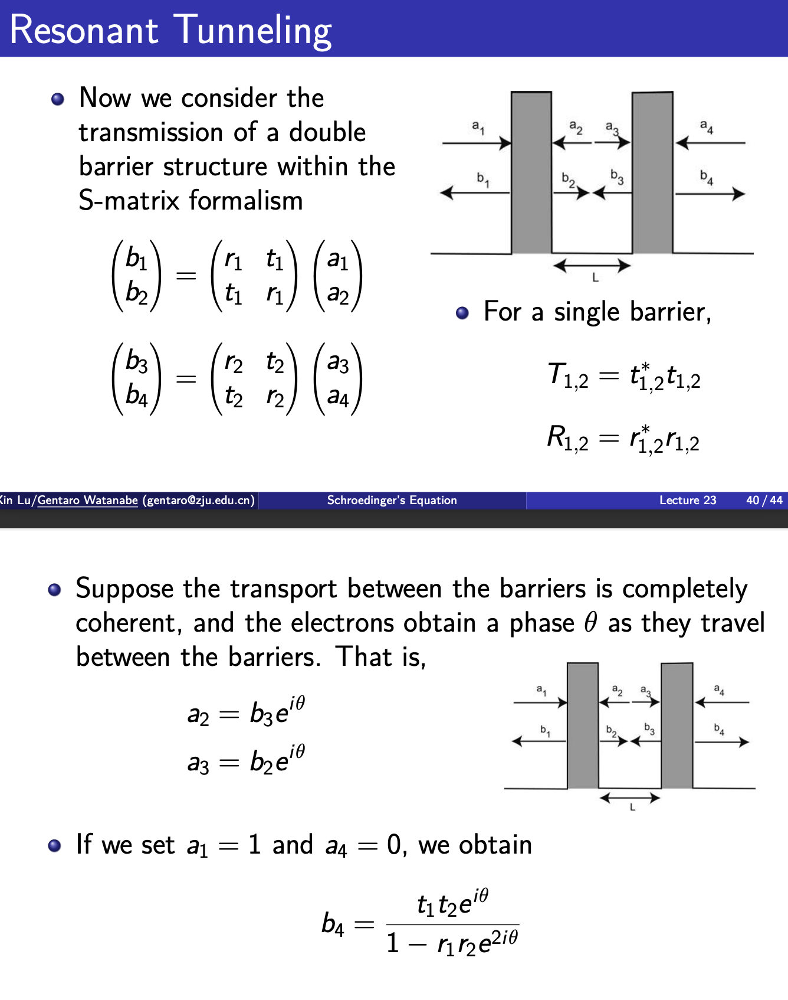
图解说明
- \(t_1\) 和 \(t_2\)：第一和第二势垒处的透射系数
- \(r_1\) 和 \(r_2\)：第一和第二势垒处的反射系数
- \(e^{i\theta}\)：引入相移 \(\theta\)
求和中各项的解释：
-
第一项 \(t_1 e^{i\theta} t_2\)：波穿过第一势垒（\(t_1\)），经历相变（\(e^{i\theta}\)），然后穿过第二势垒（\(t_2\)）
-
第二项 \(t_1 e^{i\theta} r_2 e^{i\theta} r_1 e^{i\theta} t_2\)：更复杂的情况 — 波穿过第一势垒（\(t_1\)），相变，被部分反射（\(r_2\)），相变，再次反射（\(r_1\)），相变，最后穿过第二势垒（\(t_2\)）
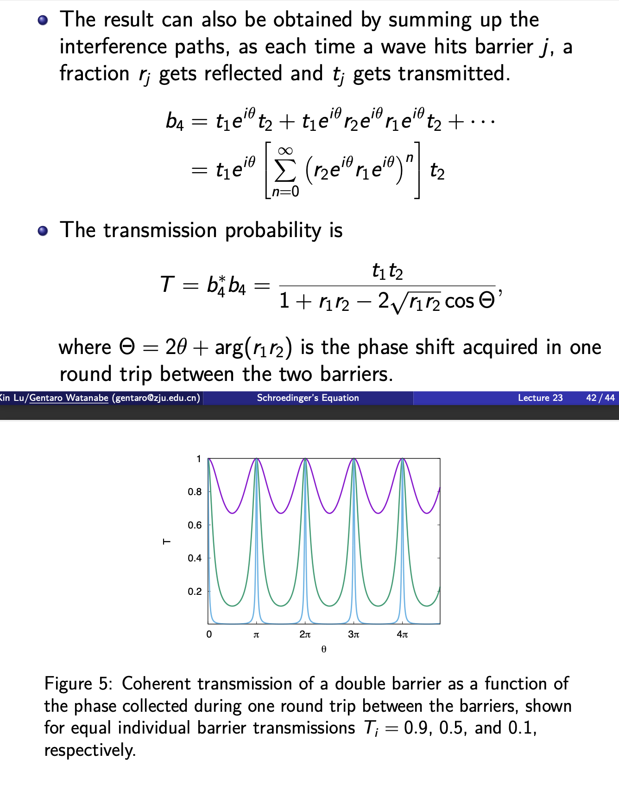
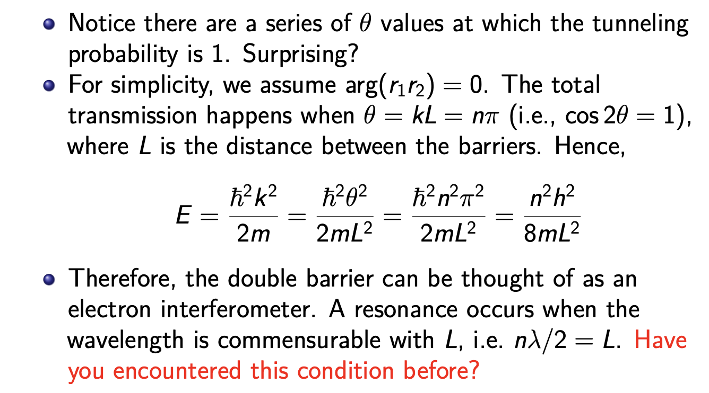
思考题
双粒子系统¶
双粒子薛定谔方程
创建日期: 2023年12月15日 20:55:27